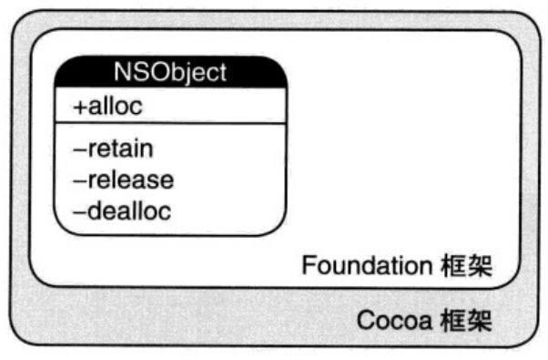

堆和栈
堆 (heap)
堆存放OC对象类型，又称优先队列，但并不是队列，按照优先级取出元素。一般存放在二级缓存中，生命周期又垃圾回收机制决定，调用这些对象的速度相对会低一些。特性如下：
- 任意节点的优先级不小于它的子节点
- 每个节点值都小于或等于它的子节点
- 主要操作是插入和删除最小元素(元素值本身为优先级键值，小元素享有高优先级)
栈 (stack)
栈存放非OC对象类型，使用的是一级缓存，通常被调用时处于存储空间中，调用完毕立即释放，一般有操作系统自动分配释放存储空间。只有一端可以操作，遵从先进后出、后进先出的原则，只支持三种操作：top、pop、push。
- top：查看 top frame
- pop：将新元素加入栈成为新的 top frame
- push：取出 top frame
引用计数
引用计数是计算机编程语言中的一种内存管理技术，是指将资源（可以是对象、内存或磁盘空间等等）的被引用次数保存起来，当被引用次数变为零时就将其释放的过程。使用引用计数技术可以实现自动资源管理的目的。同时引用计数还可以指使用引用计数技术回收未使用资源的垃圾回收算法。 当创建一个对象的实例并在堆上申请内存时，对象的引用计数就为1，在其他对象中需要持有这个对象时，就需要把该对象的引用计数加1，需要释放一个对象时，就将该对象的引用计数减1，直至对象的引用计数为0，对象的内存会被立刻释放。
在 Objective-C 中有 alloc、new、copy、mutableCopy等方法生成并持有对象，给对象引用计数加一；retain 方法持有对象给对象引用计数加一；release方法释放对象给对象引用计数减一；dealloc方法废弃对象给对象引用计数减一。

MRC 和 ARC
MRC 和 ARC 都是通过引用计数的方式进行内存管理，MRC (Manual Reference Counting) 表示手动管理引用计数，ARC (Automatic Reference Counting) 表示自动管理引用计数。混编时可以在 Project 里面找到 Build Phases-Compile Sources，给需要混编的文件指定编译器属性，-fobjc-arc 即为该文件使用 ARC，-fno-objc-arc 即为该文件不使用 ARC。编译器在编译时会帮我们自动插入 retain、release、copy、autorelease、autoreleasepool 等。
循环引用
- 互相引用的对象，要有一个引用为弱引用
block 容易造成循环引用
对象在 block 的里外要分别用__weak__strong修饰。如下，weakSelf是为了解决循环引用 ，strongSelf是为了保证任何情况下self在超出作用域后仍能够使用。1
2
3
4
5
6__weak __typeof(self) weakself = self;
obj.block = ^{
__strong __typeof(weakself) strongself = weakself;
[strongself updateSomeThing];
}NSTimer
NSTimer 的 target 持有 self，NSTimer 会造成循环引用，timer 会强引用 target 即 self，一般 self 又会持有 timer 作为属性，这样就造成了循环引用。那么，如果 timer 只作为局部变量，不把 timer 作为属性呢？同样释放不了，因为在加入 runloop 的操作中，timer 被强引用。而 timer 作为局部变量，是无法执行 invalidate 的，所以在 timer 被 invalidate 之前，self也就不会被释放。
YYKit 的 YYWeakProxy 工具类，解决了这个问题，timer 强应用 YYWeakProxy 对象，YYWeakProxy 对象弱引用 self 同时利用 runtime 进行消息转发。
深拷贝和浅拷贝
- 深拷贝：拷贝出新对象和指针。
- 浅拷贝：拷贝出新的指针指向原对象，原对象引用计数加一。
深拷贝与浅拷贝的两个判断原则，执行拷贝的对象是否可变，是 copy 方法还是 mutableCopy 方法，只有不可变对象执行 copy 方法才是浅拷贝。深拷贝的数组，它的元素依然是浅拷贝。